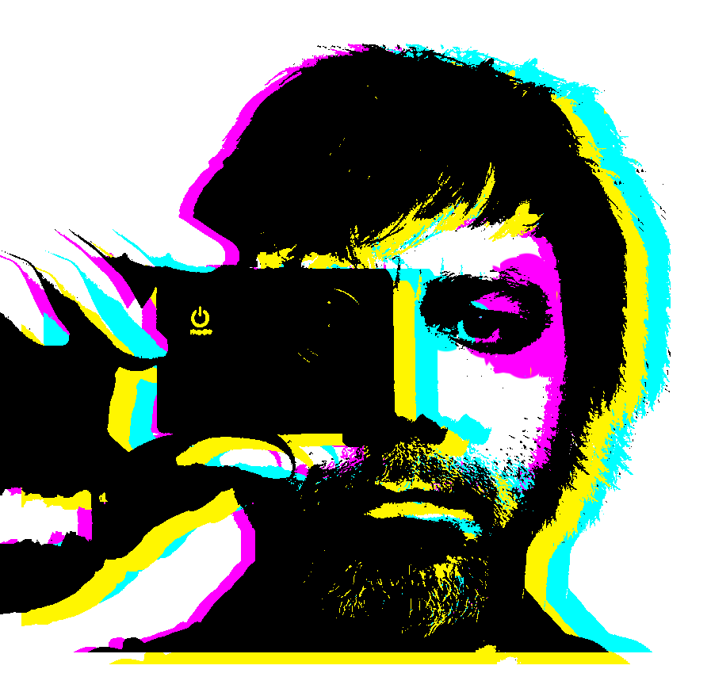

Hello World
Je suis Arturo. Originaire du Venezuela, de nationalité espagnole et Bruxellois d'adoption, j'ai fait des études de communication audiovisuelle à Madrid. Touche-à-tout et passionnée de l'image et du son j'ai travaillé dans plusieurs domaines de la création audiovisuelle : Production TV / films documentaires / montage et réalisation de clip et pubs / créations radiophonique, artistiques et visuels.
